Seen by everyone
On a Simple Skin server the swap is relayed live. Anywhere else it goes through your Mojang profile.
Simple Skin puts a full skin wardrobe behind one key. Swap, steal, import and edit skins without ever restarting Minecraft — and unlike a plain skin changer, the swap actually reaches the other players on your server.
Minecraft 26.2 · Java 25 required · Client · server optional · MIT licensed
Six screens. Swipe, use the arrows, or click a picture at the side to bring it to the front.






Interface illustrations drawn from the mod's real layout and colours.
They repaint your own screen and stop there. Simple Skin goes the whole way to the other players.
On a Simple Skin server the swap is relayed live. Anywhere else it goes through your Mojang profile.
Equip from the library or a hotkey and the skin is on you in the same tick.
Copy a player next to you, or look up any username through Mojang's own API.
Remove a layer, transplant a head, or replace a colour. The original is kept.
Put a PNG in config/simple-skin/import and it lands in your library.
One key for a random skin, or let it rotate on a timer while you play.
A client-side mod cannot tell someone else's game what to draw. Every other player asks the server, and the server asks Mojang exactly once — while you are logging in. Simple Skin takes the best route available.
Your client sends the skin over a plugin channel and the server relays it to every other Simple Skin client. No rejoin, no Mojang round-trip.
simple_skin:equip → server → simple_skin:wearing
The skin goes to your Minecraft profile, and the mod compares what Mojang is really serving before reconnecting — rejoining early would show the old one.
upload → verify → rejoin
Visibility is yours to choose. Only me stays local. Upload to profile uploads and verifies. Upload + rejoin also reconnects so the server re-reads it.
One file, dropped in your mods folder. The download page lists what else it needs.